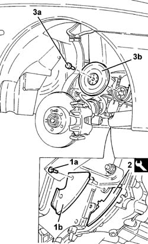
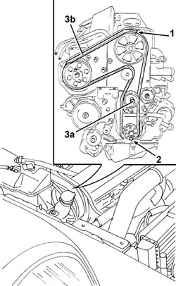
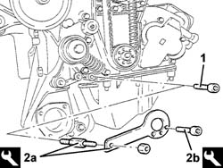
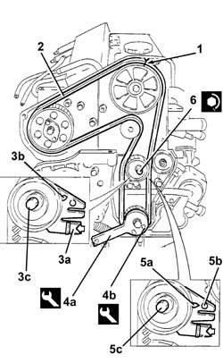

1032B10 TOOTHED timing BELT - R.R. for timing adjustment or replacement
- Path
- Procedures > 10 ENGINE > 1032 timing system > 1032B BELT-DRIVEN TIMING SYSTEM > 1032B10 TOOTHED timing BELT - R.R. for timing adjustment or replacement
- Kind
- repair procedure (removal / refitting; the operation number is the code)
- Applies to
- engines: 2.4 JTD 10V; all production periods
- Interactive page
- https://sloeber94.github.io/elrnDB-lThss/en/#/75709
Applies to: engines: 2.4 JTD 10V; all production periods
 Removing
Removing
 Refitting
Refitting- Position the vehicle on a lift.
- Open the boot and disconnect the negative battery terminal.
See in Op. 7040D50 ENGINE COMPARTMENT UPPER SOUND INSULATION SHIELD - R.R.
See in Op. 1016A10 SOUND-PROOFING COVER - R.R.
See in Op. 7055B54 PROTECTION/GUARD under engine - R.R.
See in Op. 4450B04 Right FRONT WHEEL (one) - R.R.
See in Op. 7055B42 FRONT WHEEL ARCH LINER (one), left or right - R.R.
See in Op. 7055B64 Engine compartment DUST SEAL in front wheel arch (one), left or right - R.R.
See in Op. 1092G10 Engine components single drive BELT - R.R.
See in Op. 1032D12 Timing system protective COVER(S) - R.R.
1. Undo the fixing bolts.
2. Remove the lower flywheel guard.
3. Fit the flywheel lock.
4. Undo the fixing bolts (4a) and remove the auxiliary shaft drive pulley (4b).
 | Description | Code | Function |
|---|---|---|---|
3 | Counter-torque | 1.860.898.000 | Flywheel lock |

Applies to: engines: 2.4 JTD 10V; all production periods
1. Act on the bolt fixing the drive pulley and rotate the crankshaft until the timing references are aligned.
2. Check that the drive pulley dowel is facing downwards.
3. Loosen the nut (3a) fixing the tensioning device and remove the timing drive belt (3b).

Applies to: engines: 2.4 JTD 10V; all production periods
Refitting
Removing1. Undo the bolt fixing the crankcase front cover shown in the diagram.
- Fit the timing drive belt on the drive gear, checking that the belt teeth are correctly inserted in the gear grooves.
2. Fit the tool (2a) and fasten it using the calibrated screw (2b).
| Description | Code | Function |
|---|---|---|---|
2a | Template | 1.860.905.000 | Timing belt timing |
| Description | Code | Function |
|---|---|---|---|
2b | Calibrated Screw | 1.860.905.010 | Timing belt timing |

Applies to: engines: 2.4 JTD 10V; all production periods
1. Check that the timing references are aligned.
2. Complete the fitting of the timing belt.
3. Use a screwdriver on the tensioner (3a) tab for leverage until the reference (3b) is in the maximum tension position, then lock the nut (3c) fixing the moving tensioner in this position.
4. Remove the tools (4a) and (4b). Remove the tools (4a) and (4b).
| Description | Code | Function |
|---|---|---|---|
4a | Template | 1.860.905.000 | Timing belt timing |
| Description | Code | Function |
|---|---|---|---|
4b | Calibrated Screw | 1.860.905.010 | Timing belt timing |
- Tighten the bolt fixing the front cover removed previously.
- Rotate the crankshaft through two revolutions.
5. Check once again that the timing references are aligned, loosen the nut fixing the moving tensioner (5a) and ensure that the moving reference (5b) is in line with the opening (5b), in other words in the optimum tension position.
6. Tighten the nut fixing the belt tensioner to torque.
 | Value - daNm | Fastening | Component | Ø |
|---|---|---|---|---|
6 | 2.5 | Nut | MOBILE TIMING TENSIONER | M8 |

Applies to: engines: 2.4 JTD 10V; all production periods
- Rotate the crankshaft through two revolutions once again so that the belt beds in in this position.
- Fit the flywheel lock in the special housing.
| Description | Code | Function |
|---|---|---|---|
. | Counter-torque | 1.860.898.000 | Flywheel lock |
- Fit the auxiliary shaft drive pulley and tighten the fixing bolts to torque.
| Value - daNm | Fastening | Component | Ø |
|---|---|---|---|---|
. | 2.5 | Bolt | CRANKSHAFT PULLEY | M8 |
- Remove the flywheel lock and fit the flywheel guard.
| Description | Code | Function |
|---|---|---|---|
. | Counter-torque | 1.860.898.000 | Flywheel lock |
See in Op. 1032D12 Timing system protective COVER(S) - R.R.
See in Op. 1092G10 Engine components single drive BELT - R.R.
See in Op. 7055B64 Engine compartment DUST SEAL in front wheel arch (one), left or right - R.R.
See in Op. 4450B04 Right FRONT WHEEL (one) - R.R.
See in Op. 7055B54 PROTECTION/GUARD under engine - R.R.
See in Op. 1016A10 SOUND-PROOFING COVER - R.R.
See in Op. 7040D50 ENGINE COMPARTMENT UPPER SOUND INSULATION SHIELD - R.R.
- Open the boot and connect the negative battery terminal.
- Remove the vehicle from the lift.
Topics linked from this page (8)
- 1016A10 SOUND-PROOFING COVER - R.R.
- 1032D12 Timing system protective COVER(S) - R.R.
- 1092G10 Engine components single drive BELT - R.R.
- 4450B04 Right FRONT WHEEL (one) - R.R.
- 7040D50 ENGINE COMPARTMENT UPPER SOUND INSULATION SHIELD - R.R.
- 7055B42 FRONT WHEEL ARCH LINER (one), left or right - R.R.
- 7055B54 PROTECTION/GUARD under engine - R.R.
- 7055B64 Engine compartment DUST SEAL in front wheel arch (one), left or right - R.R.
Topics that link to this page (12)
- 1016C10 SINGLE CYLINDER HEAD - R.R. and Replace gasket
- 1020D18 Front crankshaft COVER OIL SEAL - Replace
- 1032B46 TOOTHED DRIVE PULLEY/S - R.R.
- 1032B52 TOOTHED DRIVEN PULLEY (one) - R.R.
- 1032B60 TOOTHED DRIVEN PULLEY - R.R.
- 1032C18 Timing belt MOVING TENSIONER - R.R.
- 1032C32 TIMING BELT FIXED TENSIONER - R.R.
- 1036B10 CAMSHAFT in cylinder head - R.R. on vehicle
- 1060E10 PRESSURE PUMP for diesel injection - R.R.
- 1060E30 PRESSURE PUMP drive PULLEY - R.R.
- 1060E40 PRESSURE PUMP SUPPORT - R.R.
- 4130B32 POWER STEERING - R.R.